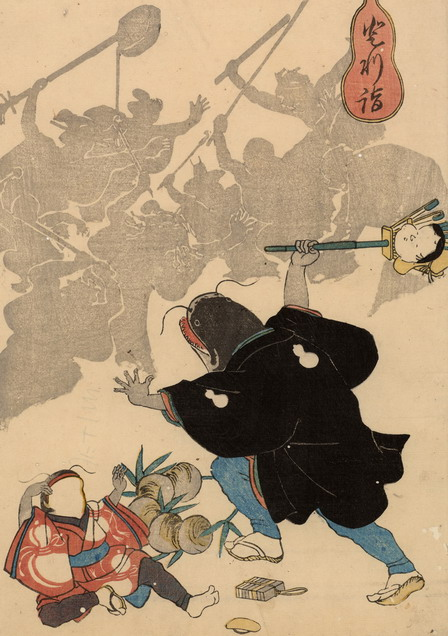

鯰の親子が人々に襲われている。父親鯰はオカメ飾りのついた熊手を振り上げて、彼らに対抗している。娘鯰は座り込んで泣きじゃくっている。親鯰の黒い羽織には瓢箪の紋が入っており、娘鯰の赤い着物も瓢箪柄である。2体とも体は人間のもので、袖から出ている腕は薄黒い。人々の姿は影で描かれている。
出典：親書誌：U426_nichibunken_0180：登利詣；トリモウデ／日付：2010／資源識別子：U426_nichibunken_0180_0001_0000
Copyright (c)2010- International Research Center for Japanese Studies, Kyoto, Japan. All rights reserved.